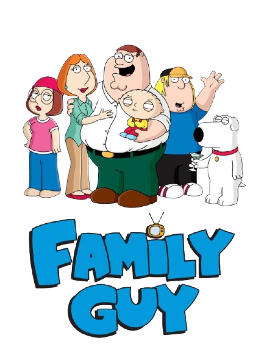

Family Guy is one of the longest running animated tv shows in America, but how did it start? Seth MacFarLane, creator of Family Guy, created and got the idea of Family Guy from student films he made in college. The main character in these student films, Larry, was similar to Peter Griffin, Family Guy's main character, and Larry had a talking dog named Steve that would evolve into the talking dog, Brian Griffin when he created Family Guy. Their were also characters similar to Lois Griffin, and Chris Griffin in his student films but Meg Griffin and Stewie Griffin were original characters made for Family Guy. there Family first premiered on the Fox network on January 31, 1999. It's premier came right after the 33 suprbowl where the Denver Broncos defeated the Atlanta Falcons. When Family guy came out, people overall enjoyed but immediately compared it to shows like, The Simpsons. Family Guy started to stand out when people saw its humor and use of cutaway gags and jokes, and unique characters. Family Guy has been airing and making new episodes ever since it started, making it the 5th longest running animated tv show in America. Today it has 24 seasons and 461 episodes, that means that on average, a family guy episode has been released every 22 days since it tarted in 1999.

Seth MacFarlane, born in 1973 in Connecticut, is the creator of the hit three adult cartoons, Family Guy, American Dad!, and The Cleveland Show, He also made the live action TV show, ted. he has also created and directed three movies, those being Ted, Ted 2, and A Million Ways to Die in the West, with the ted TV show being a prequal to the movie Ted. Before creating all of these masterpieces of media, he attended the Rhode Island School of design, where he studied video and animation, graduating in 1995 and getting his first job at Hanna-Barbera due to his Life of Larry student thesis film.